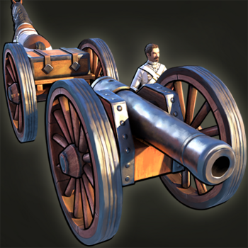
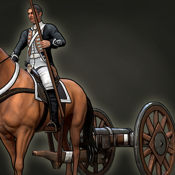

Jednotky - dělostřelectvo

Falkonet
Cena: 100 dřeva, 400 zlata
Dohled/dostřel: 30/26
Počet životů: 200
Zabrané místo: 5
Odolnost: 75% na dálku
Útok: 100
Rychlost: 4.0/1.6
Trénink z: slévarén
Základní protipěchotní dělo, účinné i proti budovám.
Kulverina
Cena: 100 dřeva, 400 zlata
Dohled/dostřel: 36/34
Počet životů: 280
Zabrané místo: 4
Odolnost: 75% na dálku
Útok: 40
Rychlost: 3.5/1.4
Trénink z: sléváren
Speciální dělo destruktivní vůči dělostřelectvu a lodím.

Moždíř
Cena: 100 dřeva, 350 zlata
Dohled/dostřel: 44/4-40
Počet životů: 300
Zabrané místo: 4
Odolnost: 75% na dálku
Útok: 500
Rychlost: 3.0/1.2
Trénink z: sléváren
Dalekonosné dělostřelectvo, útočí pouze na budovy a lodě.

Těžké dělo
Cena: zdarma každých 115s
Dohled/dostřel: 32/28
Počet životů: 475
Zabrané místo: 7
Odolnost: 75% na dálku
Útok: 200
Rychlost: 3.5/1.4
Trénink z: továren
Speciální ničivé dělo dostupné pouze z továren.

Koňské dělo
Cena: 100 dřeva, 500 zlata
Dohled/dostřel: 30/26
Počet životů: 200
Zabrané místo: 6
Odolnost: 75% na dálku
Útok: 125
Rychlost: 6.0/2.4
Trénink z: sléváren
Rychlý, ale drahý ekvivalent falkonetu.

Raketa
Cena: zdarma každých 90s
Dohled/dostřel: 32/28
Počet životů: 350
Zabrané místo: 6
Odolnost: 75% na dálku
Útok: 300
Rychlost: 4.0/1.6
Trénink z: továren
Britské těžké dělostřelectvo.

Velká bombarda
Cena: zdarma každých 100s
Dohled/dostřel: 32/28
Počet životů: 475
Zabrané místo: 7
Odolnost: 75% na dálku
Útok: 500
Rychlost: 3.5/1.4
Trénink z: továren
Osmanské těžké dělostřelectvo.
Létající vrána
Cena: zdarma každých 240s
Dohled/dostřel: 32/18
Počet životů: 225
Zabrané místo: 7
Odolnost: 75% na dálku
Útok: 190
Rychlost: 3.0/1.2
Trénink z: Konfuciánské akademie
Čínské těžké dělostřelectvo.

Malá bombarda
Cena: 1200 zlata
Dohled/dostřel: 32/28
Počet životů: 600
Zabrané místo: 8
Odolnost: 75% na dálku
Útok: 400
Rychlost: 2.5/1
Trénink z: hospody, kláštera
Žoldnéřské těžké dělostřelectvo k najmutí za hromadu zlata.
Gatlingův kulomet
Cena: 100 dřeva, 250 zlata
Dohled/dostřel: 26/24
Počet životů: 150
Zabrané místo: 4
Odolnost: 75% na dálku
Útok: 30*6
Rychlost: 4/1.6
Trénink z: sléváren
Protipěchotní zbraň dostupná pro Spojené státy a revolucionáře.

Rabauld
Cena: 100 dřeva, 300 zlata
Dohled/dostřel: 30/26
Počet životů: 150
Zabrané místo: 4
Odolnost: 75% na dálku
Útok: 33*6
Rychlost: 4.0/2.4
Trénink z: sléváren
Portugalská protipěchotní děla, nahrazují falkonet.
Polní dělo
Cena: 100 dřeva, 300 zlata
Dohled/dostřel: 36/32
Počet životů: 150
Zabrané místo: 4
Odolnost: 75% na dálku
Útok: 70
Rychlost: 3
Trénink z: válečných dílen
Víceúčelové dělo používáné Irokézskými válečníky.

Zápalný šíp
Cena: 100 dřeva, 300 zlata
Dohled/dostřel: 34/28
Počet životů: 175
Zabrané místo: 4
Odolnost: 75% na dálku
Útok: 75
Rychlost: 3
Trénink z: hradu, šóguna
Japonské protipěchotní/protilodní dělostřelectvo.
Morutaru
Cena: 100 dřeva, 300 zlata
Dohled/dostřel: 44/4-40
Počet životů: 225
Zabrané místo: 3
Odolnost: 75% na dálku
Útok: 385
Rychlost: 2.5
Trénink z: hradu, šóguna
Japonské dalekonosné dělostřelectvo.

Ruční moždíř
Cena: 50 jídla, 90 dřeva
Dohled/dostřel: 38/4-34
Počet životů: 100
Zabrané místo: 1
Odolnost: 50% na dálku
Útok: 5
Rychlost: 3.0/1.2
Trénink z: hradu
Čínské lehké dalekonosné dělostřelectvo.
Obléhací slon
Cena: 300 dřeva, 350 zlata
Dohled/dostřel: 34/28
Počet životů: 700
Zabrané místo: 7
Odolnost: 30% na dálku
Útok: 40
Rychlost: 4.0
Trénink z: hradu, pevnosti Agra
Dělo na indickém slonovi určené proti budovám, lodím a dělostřelectvu.